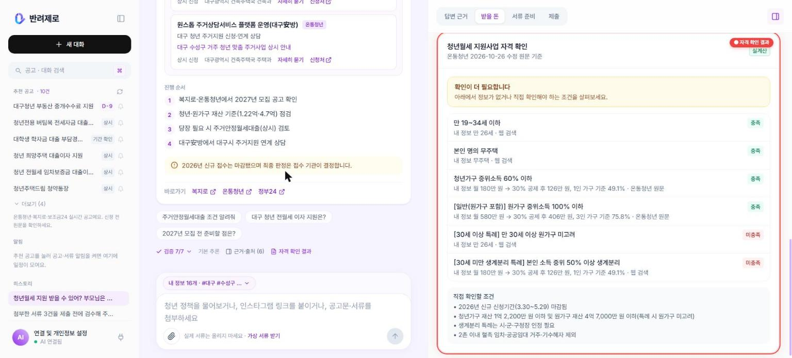
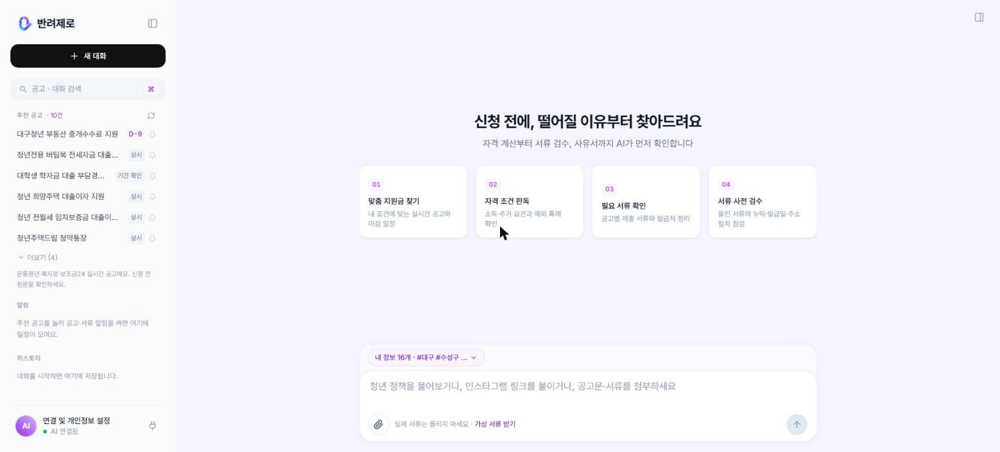
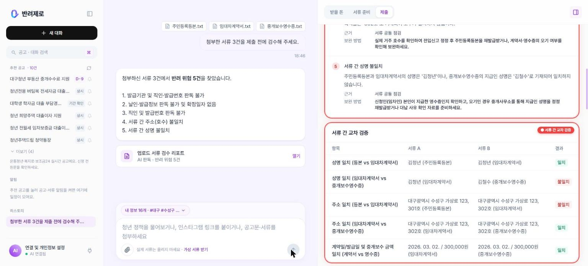

받을 수 있는 돈인데, 청년은 조건을 확인하다가 포기한다
| 근거 | 수치 | 출처 |
|---|---|---|
| 신청을 포기하는 시점 | 60% 조건 확인 단계 20% 서류 준비 단계 | 인천 동구 청년정책 인식 설문 (2025-12, 115명) |
| 검토 때 가장 큰 부담 | "내가 대상자인지 판단하기 어렵다" 25.9% "소득·재산 기준이 복잡하다" 17.4% | 같은 설문 (복수 응답) |
| 신청하지 못한 이유 | "대상자가 아니어서" 60.6% | K-공감 설문 (2026-09, 310명) |
| 정책을 쓰지 않은 이유 | "신청조건이 해당되지 않아서" 54.9% | 청년데이터연구소 (2026-09, 281명) |
| 서류가 빠지면 | 온라인은 접수 불가, 방문 신청은 15일 안에 보완하지 않으면 직권 취소 | 국토교통부 청년월세 지원 매뉴얼 (2024) |
| 단계 | AI(Gemini)가 하는 일 | 서버 코드가 하는 일 | 틀렸을 때의 대응 |
|---|---|---|---|
| 질문 해석·계획 | 의도 파악, 실행 계획, 도구 11개 중 선택 (Function Calling) | 시간 예산 260초, 100초 남으면 도구 중단 | 정보가 없으면 단정하지 않고 한 가지씩 되묻기 |
| 공고 해석 | 조건 추출, 숨은 예외를 "부모님과 따로 산 지 1년이 넘었나요?" 같은 질문으로 | 공식 원문·공공 API 값을 우선 사용 | 원문이 없으면 검색·첨부 공고 기준임을 표시 |
| 자격 판정 | 조건을 경로(일반·특례)별로 정리 | 중위소득 비율, 근로소득 공제, 특례 경로, 무주택·재산, 한 끗 차이 계산 | 계산값과 판정이 답변과 다르면 다시 작성 |
| 서류 판독 | 성명·주소·발급일·직인 판독, 서류끼리 대조 | 주민번호·전화·계좌 마스킹 (텍스트 서류) | 읽을 수 없으면 "판독 불가", 추측 금지 |
| 답변 | 근거와 다음 행동을 담아 작성 | 금액을 공식 원문과 대조, 공공기관·등록 사이트 링크만 남김, 오늘 날짜로 지난 마감 검사 | 고칠 점이 있으면 최대 한 번 다시 쓰고 재검증 |
| 구분 | 내용 |
|---|---|
| 프론트/클라이언트 | Next.js 14 (App Router), React 18, TypeScript, Tailwind CSS |
| 백엔드/에이전트 | Next.js API Route, 직접 만든 에이전트 루프 (AI SDK·프레임워크 미사용), SSE 실시간 진행 표시 |
| AI 모델 | Google Gemini API gemini-4-hydrogen (함수 호출, Google Search 연동, 난이도별 추론 수준 전환) |
| 외부 API | 공공데이터포털 보조금24·복지로 지자체/중앙부처복지서비스, 온통청년 청년정책 API, ScrapeCreators (Treg 게이트웨이) |
| 데이터 (출처·라이선스) | 공공데이터포털 API 4종 (이용허락범위 제한 없음), 2026 기준 중위소득 (보건복지부 고시), 시연용 가상 서류 (팀 제작) |
| 배포 환경 | Vercel (서버리스, 최대 300초 실행), 로그인 없이 접속 |
| 동작 범위 | 내용 |
|---|---|
| 실제 계산 | 중위소득 비율·공제·특례·무주택 판정, 한 끗 차이, 마감 판정, 마스킹 |
| 실시간 API | 공고 조회·원문 확인, 인스타 캡션·대본, Gemini 판독·답변 |
| 예시 데이터 | 시연용 가상 서류 3세트, 가상 공고문 |
| 아직 없음 | 이미지·PDF 마스킹, 서류 발급 연동, 기관 접수 연계 |
정책 검색에 더해, 신청 전에 반려 위험을 찾고 보완까지 돕는 에이전트
| 기존 서비스 | 하는 일 | 반려제로가 더하는 것과 사용자 효과 |
|---|---|---|
| 복지로 정책별 모의계산 | 정책 하나를 골라 소득·재산을 직접 입력하면 대상 여부 계산 | 일상 언어로 묻기만 하면 여러 정책에 대해 공제·특례 경로까지 계산, 빠진 정보만 되묻기. 입력 부담과 오판 감소 |
| 온통청년·보조금24 맞춤 검색 | 나이·지역·관심 분야로 정책 목록 검색 | 검색 결과에 이어 원문 대조, 자격 판정, 서류 검수까지 한 번에 진행. 여러 사이트를 오가지 않음 |
| 정책 안내 SNS 게시물 | 정책을 빠르게 알림 | 게시물 링크를 공식 공고와 대조해 마감·차이를 알림. 지난 공고·과장 정보에 시간 낭비 방지 |
| 기관의 서류 보완 요청 | 접수 뒤 담당자가 서류를 보고 보완을 요청 | 접수 전에 서류끼리 대조해 불일치를 찾음. 보완 기한·직권 취소 위험 감소 |
https://banryeo-zero.vercel.app/ 에서 로그인 없이 가상 서류로 바로 체험할 수 있다 (아래는 가상 프로필로 실행한 화면)



가상 신청자 15명을 배포 사이트에 그대로 보내 공식 기준 정답과 비교하고, 틀린 유형을 고쳐 다시 확인했다
| 첫 실행에서 나온 오류 | 원인 | 보완 | 다시 실행 |
|---|---|---|---|
| 월 180만 원 청년을 세전 소득으로 판정 | 소득평가액(근로소득 30% 공제)을 계산하지 않음 | 공제율을 서버가 계산, 정책의 모든 소득 조건에 적용 | 공제 후 49.1% 충족 |
| 특례 경로를 일반 조건과 섞음 | 조건을 모두 "그리고"로 판정 | 조건을 경로로 나눠 하나만 충족하면 되게 | 경로 3개 미충족 → 불가 |
| 주택 보유 청년에게 부모 소득을 되물음 | 무주택·재산 조건 누락 | 무주택·재산 판정 추가, 이미 미충족이면 묻지 않음 | 무주택 미충족 → 불가 |
| 지난 마감을 신청 가능처럼 안내할 위험 | AI가 오늘 날짜를 모름 | 한국 시간 오늘 날짜를 넣고 답변의 날짜 검사 | 마감 안내 정상 |
| 특례가 모두 안 되는데 부모 소득만 되물음 | 이미 정해진 판정을 답변에 안 씀 | 되묻기 앞에 특례 미충족 이유와 남은 조건 표시 | 조건부 결론 + 되묻기 |
| 지표 | 첫 실행 | 보완 뒤 |
|---|---|---|
| 정답 | 7명 | 13명 |
| 부분 정답 | 4명 | 2명 |
| 오판 | 3명 | 0명 |
| 판단 보류 | 1명 | 0명 |
| 보완 뒤 결과는 배포 사이트 재실행 6명과 모의 실행 1명으로 확인. 정답은 국토교통부 매뉴얼과 복지로 2026 안내로 다시 정함. | ||
| 발전안 | 적용 방식 |
|---|---|
| 결과 캐시 | 공개 공고·추출한 자격 조건·공통 서류 목록을 공고 ID·수정일 기준으로 저장해 반복 조회와 AI 분석 비용을 줄인다. 개인별 결과와 원본 증빙은 넣지 않는다 |
| 품질 관리 | 정책을 늘릴 때마다 가상 신청자 테스트를 추가하고, 공식 기준 정답과 비교한 정확도를 숫자로 관리한다 (현재 청년월세 15명 중 정답 13명, 오판 0명) |
| 맞춤 추천 고도화 | 지금의 조건 기반 추천을 "받을 가능성이 높은 순"(서버 판정·한 끗 차이 반영)으로, 다음에는 열어 본 공고·스크랩을 브라우저 안에서 학습하는 추천으로 바꾼다 |
| 기관 제휴·공식 연계 | 대구 청년 주거지원 같은 사업 1개를 시범으로 청년센터·지자체와 검수 항목을 검증하고, 승인된 사업부터 본인인증 → 접수 → 보완 요청·결과 수신을 잇는다 |
| 읽는 서류 확장 | 같은 엔진으로 전월세 계약 서류(등기부등본·계약서)와 첫 직장 서류(근로계약서·급여명세서)까지 넓혀, 서명·제출 전에 청년의 손해를 막는다 |
| 이름 | 역할 | 담당 업무 |
|---|---|---|
| [작성] | 대표자 | [작성] |
| [작성] | [작성] | [작성] |
| [작성] | [작성] | [작성] |
| 구분 | 내용 |
|---|---|
| 해커톤 이전 개발 범위 | 해당 없음 |
| 해커톤 기간 중 개발 범위 | 전체 (2026-11-16 개발 시작) |
| 타 공모전 출품·수상 여부 | 해당 없음 |
| 구분 | 명칭 | 출처 · 라이선스 | 사용 위치 |
|---|---|---|---|
| 오픈소스 | Next.js 14.2 | nextjs.org · MIT | 웹 화면, 서버 API |
| 오픈소스 | React 18.3 / React DOM | react.dev · MIT | 화면 구성 |
| 오픈소스 | TypeScript 5.9 | typescriptlang.org · Apache-2.0 | 개발 언어, 타입 검사 |
| 오픈소스 | Tailwind CSS 3.4 · PostCSS 8.5 · Autoprefixer 10.6 | tailwindcss.com · postcss.org · MIT | 화면 스타일, CSS 빌드 |
| 오픈소스 | lucide-react 0.460 | lucide.dev · ISC | 아이콘 |
| 폰트 | Pretendard · Inter | orioncactus / Rasmus Andersson · SIL OFL 1.1 | 화면 글꼴, 소개서 글꼴 |
| 자체 제작 | 시연용 가상 서류·가상 공고문 | 팀 제작 (scripts/make-samples.ps1) | 시연, 테스트, 소개서 화면 |
| 구분 | 명칭 | 출처 · 라이선스 | 사용 위치 |
|---|---|---|---|
| 외부 데이터·API | 대한민국 공공서비스(혜택) 정보 (보조금24) | 행정안전부 / 공공데이터포털 15113968 · 이용허락범위 제한 없음, 무료 · 요청 시점 실시간 | 왼쪽 맞춤 공고, 공식 원문·구비서류 대조 |
| 외부 데이터·API | 지자체복지서비스 · 중앙부처복지서비스 (복지로) | 한국사회보장정보원 / 공공데이터포털 15108347 · 15090532 · 이용허락범위 제한 없음, 무료 | 왼쪽 맞춤 공고, 복지 공고 원문 확인 |
| 외부 데이터·API | 온통청년 청년정책 API | 한국고용정보원 / 공공데이터포털 15143273 · 이용허락범위 제한 없음, 무료 | 왼쪽 맞춤 공고, 대안 공고 탐색 |
| 외부 데이터 | 2026년 기준 중위소득 | 보건복지부 고시 · 저작권법 제7조 제2호의 보호받지 않는 저작물 | 자격 판정 (소득 비율 계산) |
| 외부 데이터·API | 인스타그램 게시물 캡션·대본 (사용자가 넣은 링크만) | ScrapeCreators API (Treg 경유) · 공개 게시물만 1건씩 조회하고 영상·이미지는 저장하지 않음 | SNS 게시물 검증 |
| 외부 데이터 | 정책 공식 원문·안내 페이지 | 각 정책 소관 기관 (.go.kr 등) · 각 기관 저작권 정책 | 답변 근거, 출처 링크 |
| AI 모델 | Google Gemini API (gemini-4-hydrogen), Google Search 연동 | Google · Gemini API 이용약관 | 서비스 AI 전체 (질문 해석, 도구 선택, 서류 판독, 답변) |
| 개발 도구 | Claude Code 2.1.220 (Claude Opus 5.5·Fable 5.2), Claude | Anthropic | 서비스 코드 대부분 작성, 자료조사, QA, 문서 초안·시연영상 편집 보조 |
| 자료조사 AI | ChatGPT | OpenAI | 자료조사 (사실은 출처 페이지로 재확인) |
| 개발 도구 | Google Antigravity 2.32.1 (Gemini 4 Argon·Hydrogen) | MVP 첫 버전(11-16), 가벼운 버그 수정 | |
| 개발 도구 | Google Stitch 2.0 | 화면 디자인 | |
| AI 생성 이미지·음악 | 반려제로 로고·심볼, 시연영상 배경음악 | AI 생성 · Google Nano Banana·Neon(로고), HeyGen 음악 라이브러리(음악) | 서비스 로고, 소개서 표지, 시연영상 |
| 서비스 | Vercel · GitHub · Treg | 각 서비스 이용약관 | 배포 · 소스 저장소 · API 게이트웨이 |